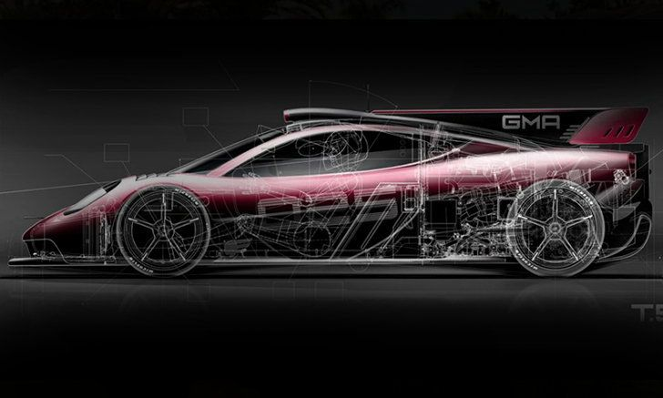
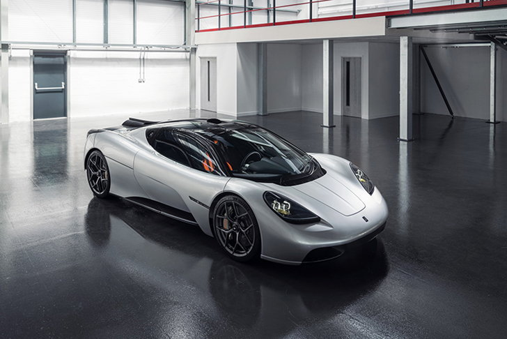
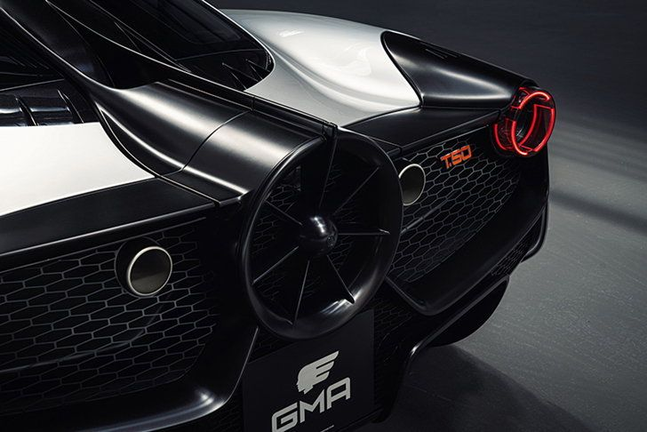
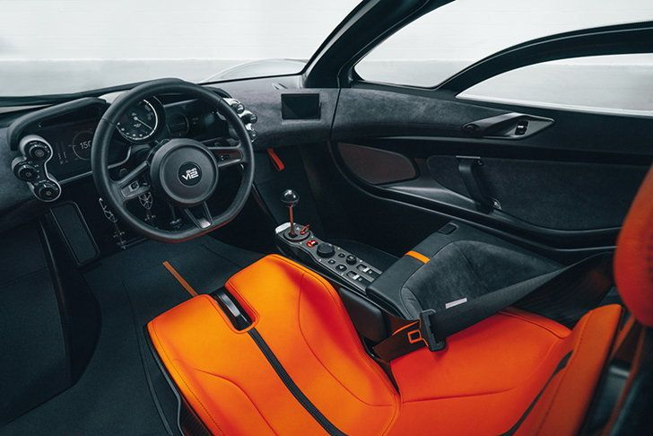
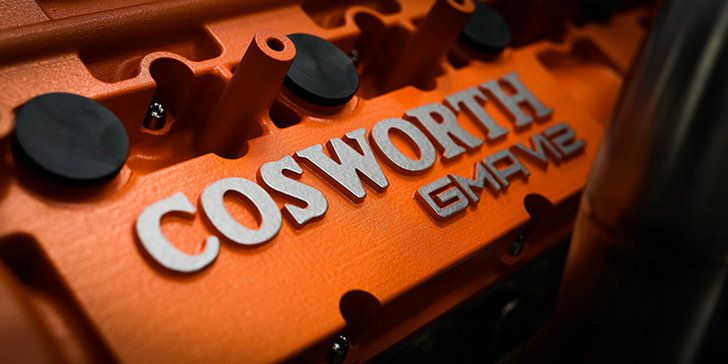
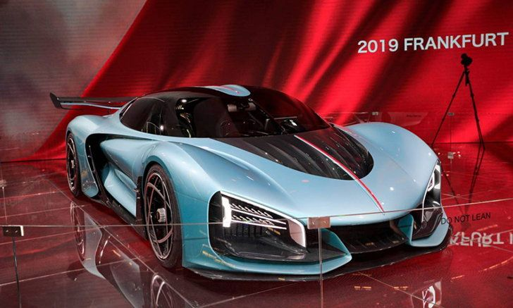
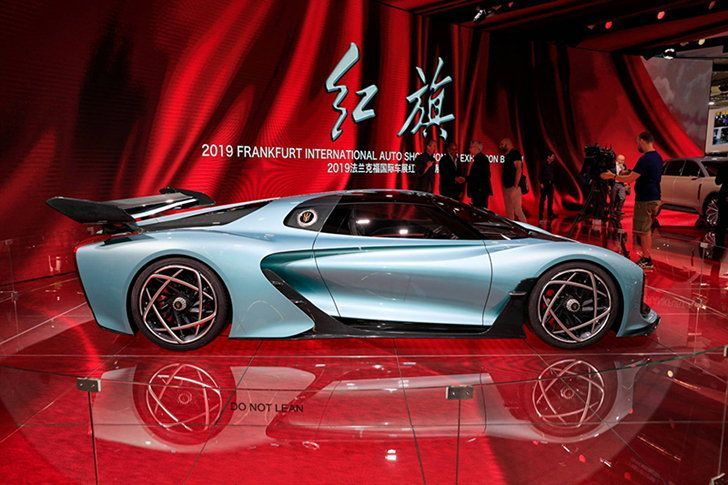
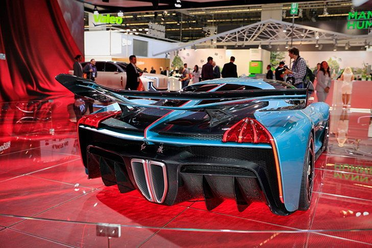

มีแค่ 25 คันในโลก! Gordon Murray T.50s ซูเปอร์คาร์ติดใบพัดตัวแข่ง 730+ แรงม้า
Gordon Murray Automotive เพิ่งจะเปิดตัว T.50 ซูเปอร์คาร์ติดใบพัดรุ่นล่าสุดไปเมื่อเดือนที่ผ่านมา และตอนนี้ทางบริษัทก็ได้มีการแนะนำอีกเวอร์ชั่นที่ทรงพลังยิ่งกว่า โดยให้ชื่อสั้นๆว่า T.50s
T.50s ถูกนิยามว่าเป็น "racing-focused version" หรือรถเวอร์ชั่นสนามแข่งของ T.50 รุ่นสแตนดาร์ด โดยในเวอร์ชั่นนี้ได้รับการปรับปรุงและแก้ไขส่วนที่สำคัญหลายร้อยรายการ เพื่อเหมาะกับการแข่งขันและวิ่งในสนามแข่งมากที่สุด
เริ่มตั้งแต่การปรับปรุงเรื่องอากาศพลศาสตร์ ซึ่งตอนนี้ตัวรถได้ถูกเพิ่มสปอยเลอร์หน้า รีดีไซน์ดิฟฟิวเซอร์ใหม่ รวมถึงติดตั้งครีบรีดอากาศเพื่อช่วยเสริมประสิทธิภาพในการเข้าโค้ง นอกจากนี้ยังมีปีกหลังที่กว้างขึ้น ซึ่งจะทำงานร่วมกับพัดลมที่ติดตั้งอยู่บั้นท้ายเพื่อสร้างแรงกดมากกว่า 1,500 กก.
T.50s ยังมาพร้อมล้อฟอร์จแมกนีเซียม หุ้มด้วยยาง Michelin Cup Sport 2 จับคู่กับเบรกคาร์บอนเซรามิกของ Brembo ซึ่งมีคาลิปเปอร์หกสูบที่ด้านหน้าและสี่สูบที่ด้านหลัง และยังปรับปรุงช่องดักอากาศที่ซุ้มล้อ เพื่อประสิทธิภาพการระบายความร้อนของเบรกที่ดีกว่าด้วย
บริษัทไม่ได้เปิดเผยรูปภาพห้องโดยสาร แต่กล่าวว่า ภายในของ T.50s จะมีเบาะนั่งแบบคาร์บอนไฟเบอร์ตรงกลาง ขนาบข้างด้วยที่นั่งผู้โดยสารเดี่ยวทางด้านซ้าย มีพวงมาลัยคาร์บอนไฟเบอร์ที่ได้รับแรงบันดาลใจมาจากรถแข่ง F1 พร้อมตัดอุปกรณ์ที่ไม่จำเป็นออกหลายรายการ ส่งผลให้ T.50s มีน้ำหนักเพียง 890 กก. ซึ่งเบากว่า T.50 รุ่นสแตนดาร์ดถึง 94 กก.
ด้านขุมพลัง มาพร้อมเครื่องยนต์ V12 ขนาด 3.9 ลิตร ที่ได้รับการอัพเกรดใหม่ น่าเสียดายบริษัทไม่ได้เปิดเผยรายละเอียดทางเทคนิค แต่กล่าวว่าการปรับปรุงทั้งหมดส่งผลให้เครื่องยนต์ผลิตกำลังเพิ่มขึ้นได้ประมาณ 30 แรงม้า นั่นหมายความว่าหากเปิดใช้งานโหมด V-Max Boost รถรุ่นนี้จะมีพละกำลังมากกว่า 730 แรงม้าเลยทีเดียว
เพื่อรับมือกับกำลังที่เพิ่มขึ้น ระบบเกียร์ธรรมดา 6 สปีดจึงถูกปรับปรุงใหม่ทั้งหมด โดยปรับอัตราส่วนการทดเกียร์ให้เหมาะสมกับความเร็ว พร้อมกันนี้ยังได้ปรับปรุงช่วงล่างใหม่ และลดความสูงของรถลงอีก 40 มม. ด้วย
Gordon Murray T.50s จะถูกผลิตจำกัดเพียง 25 คัน สนนราคาคันละ 3.1 ล้านปอนด์ หรือราว 129 ล้านบาท (ไม่รวมภาษี)
Hongqi S9 ไฮเปอร์คาร์ไฮบริดสัญชาติจีน 1,400 แรงม้า เตรียมขึ้นสายการผลิตจริงปีหน้า
เมื่อเดือนกันยายนปีที่ผ่านมา Hongqi (หงฉี) แบรนด์รถหรูจากประเทศจีน ได้สร้างความตื่นเต้นให้กับผู้คนในงาน Frankfurt Motor Show 2019 ด้วยการเปิดตัว Hongqi S9 ไฮเปอร์คาร์ไฮบริดรุ่นต้นแบบพละกำลัง 1,400 แรงม้า ล่าสุดมีรายงานข่าวว่า S9 พร้อมแล้วสำหรับการผลิตจริงในปีหน้า 
เว็บไซต์ CarNewsChina รายงานว่า S9 ไฮเปอร์คาร์ไฮบริดรุ่นแรกของ Hongqi จะเข้าสู่สายการผลิตในปีหน้า โดยจำกัดการผลิตไว้ที่ 70 คัน และคาดว่าจะมีราคาอยู่ที่ 10 ล้านหยวน หรือราว 45.4 ล้านบาท ซึ่งถ้าราคาจำหน่าย S9 ตกอยู่ที่ 10 ล้านหยวนจริง นั่นจะทำให้ไฮเปอร์คาร์รุ่นดังกล่าวเป็นรถยนต์ที่มีราคาสูงที่สุดในประวัติศาสตร์ของจีนเลยทีเดียว
ด้านขุมพลังมีการคาดการณ์ว่า S9 จะได้รับการติดตั้งเครื่องยนต์เบนซิน V8 ความจุ 4.0 ลิตร เทอร์โบชาร์จ ทำงานร่วมกับมอเตอร์ไฟฟ้าหนึ่งตัวหรือมากกว่านั้น
ขณะที่ Hongqi เคลมว่า ขุมพลังไฮบริดของ S9 จะให้กำลังสูงสุดอยู่ที่ 1400 แรงม้า ทำอัตราเร่ง 0-100 กม./ชม. ได้ภายใน 1.9 วินาที และทำความเร็วได้สูงสุด 400 กม./ชม.